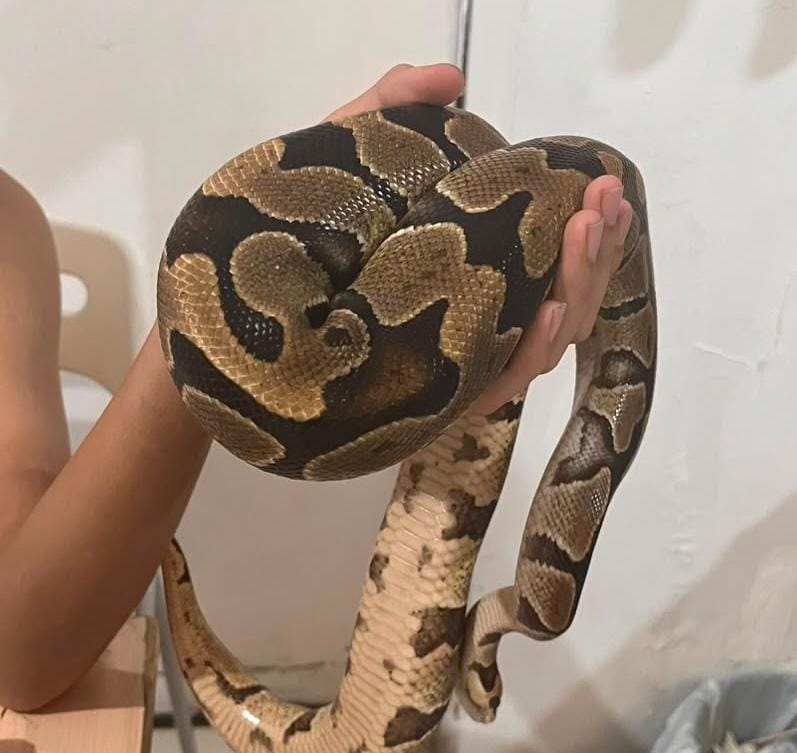
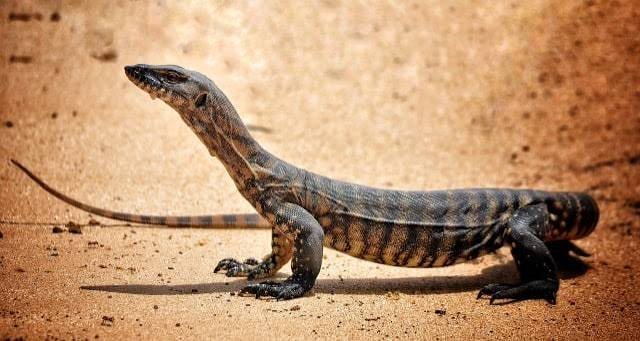

Katak Pohon Hijau Australia
Katak Pohon Hijau Australia (Litoria caerulea) merupakan salah satu spesies katak pohon terbesar yang berasal dari Australia dan Papua Nugini. Warna tubuhnya hijau cerah dengan kulit yang halus. Hewan ini mampu memanjat dengan mudah berkat bantalan lengket pada jari-jarinya. Makanan utamanya adalah serangga, laba-laba, dan hewan kecil lainnya.

Katak Pohon Bibir Putih
Katak Pohon Bibir Putih merupakan katak pohon terbesar di dunia. Ciri khasnya adalah garis putih yang membentang di sepanjang bibir bawahnya. Katak ini hidup di hutan hujan tropis dan aktif pada malam hari. Makanannya terdiri atas berbagai jenis serangga dan laba-laba.

Bunglon Fischer
Bunglon Fischer berasal dari Tanzania. Hewan ini terkenal karena memiliki tanduk kecil pada kepalanya serta kemampuan mengubah warna tubuh sesuai kondisi lingkungan, suhu, maupun emosinya. Bunglon ini berburu serangga menggunakan lidahnya yang panjang dan lengket.

Iguana Kepala Merah
Iguana Kepala Merah memiliki kepala berwarna merah mencolok dengan tubuh hijau. Hewan ini hidup di pepohonan dan sering berjemur di bawah sinar matahari. Makanan utamanya berupa daun, bunga, buah, serta berbagai tumbuhan lainnya.

Kura-Kura Brazil
Kura-Kura Brazil merupakan kura-kura air tawar yang hidup di sungai, danau, serta kolam. Hewan ini sangat senang berenang dan berjemur di atas batu atau kayu. Makanannya meliputi tumbuhan air, ikan kecil, serangga, dan hewan air lainnya.

Leopard Gecko
Leopard Gecko adalah kadal kecil yang berasal dari Asia Selatan. Corak tubuhnya menyerupai tutul macan tutul sehingga disebut "Leopard". Berbeda dengan kebanyakan gecko lainnya, hewan ini memiliki kelopak mata yang dapat berkedip. Leopard Gecko aktif pada malam hari dan memakan berbagai jenis serangga.

kura-kura buaya
Kura-kura buaya adalah kura-kura air tawar raksasa yang berasal dari Amerika Utara. Cangkangnya sangat keras dan berduri tajam menyerupai punggung aligator atau buaya. Kura-kura ini berburu dengan cara diam di dasar air dan memancing ikan menggunakan lidahnya yang berbentuk seperti cacing.

Kepiting Darat Cokelat
Kepiting Darat Cokelat adalah jenis kepiting darat berukuran besar yang banyak ditemukan di kawasan pesisir tropis Indo-Pasifik. Hewan ini memiliki cangkang halus berwarna cokelat keabu-abuan dan sepasang capit yang ukurannya tidak sama besar. Mereka menghabiskan sebagian besar hidupnya di daratan dengan membuat lubang persembunyian di area hutan bakau dan aktif mencari makan pada malam hari.

Ballphython
Ball Python adalah ular piton berukuran kecil yang berasal dari benua Afrika. Ular tidak berbisa ini melumpuhkan mangsanya dengan cara melilitkan tubuhnya dengan sangat kuat. Saat merasa takut, hewan ini akan menggulung tubuhnya menjadi bentuk bola rapat untuk melindungi kepalanya

Biawak
Leopard Gecko adalah kadal kecil yang berasal dari Asia Selatan. Corak tubuhnya menyerupai tutul macan tutul sehingga disebut "Leopard". Berbeda dengan kebanyakan gecko lainnya, hewan ini memiliki kelopak mata yang dapat berkedip. Leopard Gecko aktif pada malam hari dan memakan berbagai jenis serangga.

Katak Budgeet
Katak Budgett adalah katak bertubuh lebar dan bermulut besar yang berasal dari Amerika Selatan. Berbeda dengan katak biasa, hewan ini sangat agresif dan akan mengeluarkan jeritan melengking yang menyeramkan untuk menakuti musuhnya. Katak ini aktif di malam hari dan berburu mangsa dengan mengandalkan rahangnya yang kuat.